キネ タイキ
木根 大気
スキル
プログラミング
Java
openFrameworks
Processing
Arduino
HTML/CSS/SASS
JavaScript
ソフトウェア
Photoshop
Illustrator
InDesign
DreamWeaver
Premiere
MicrosoftOffice
自己紹介
はじめまして。デザインとプログラミングを半々くらいで勉強しています。
学校ではWebやプログラミングで、インスタレーション作品やアプリケーションを制作しています。
面白いものやかっこいいもの、斬新なものを作って、人の目を惹くことを、いつも考えながら作品を作っています。
どうぞ、よろしくお願いします。
略歴
| 1994年 | 7月 | 誕生 |
| 2013年 | 3月 | 都立六郷工科高等学校 デザイン科 卒業 |
| 2013年 | 4月 | 東京工芸大学 芸術学部 インタラクティブメディア学科 入学 |
| 2014年 | 10月 | 新宿クリエイターズフェスタ にて Kaleidoscope 出展 |
| 2015年 | 4月 | ソフトウェアデザイン研究室 所属 |
| 2015年 | 10月 | 新宿クリエイターズフェスタ にて 5worlds 出展 |
| 2015年 | 11月 | 東京デザイナーズウィークにて びっくりToylet 出展 |
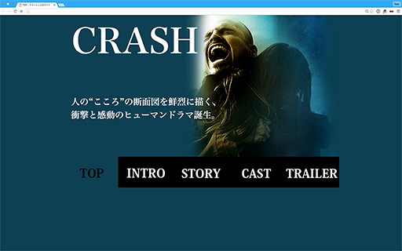
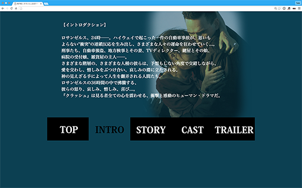
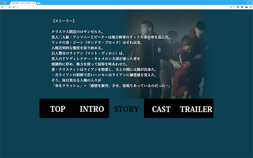
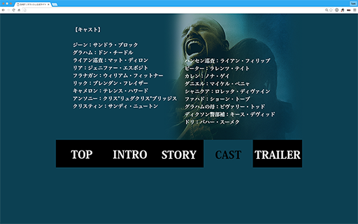
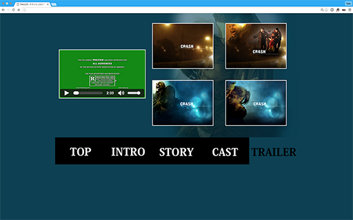
CRASH ウェブサイト案
2004年に放映された映画、CRASHのPRを想定したウェブサイト案です。
劇中、登場人物の心情のコントラストが強く出ていたので、
濃い背景と白い文字で劇中の深さを表現しました。
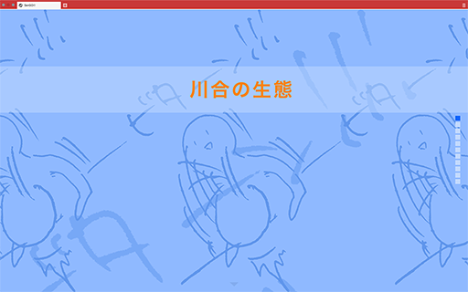
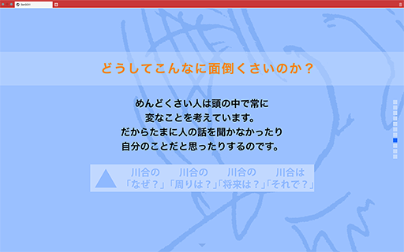
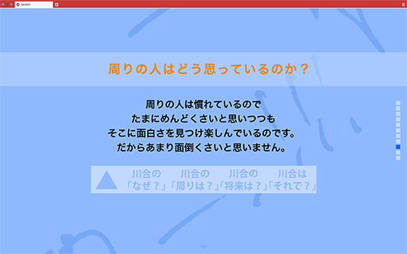
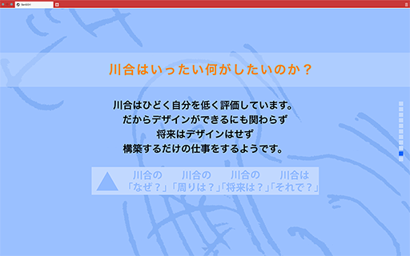
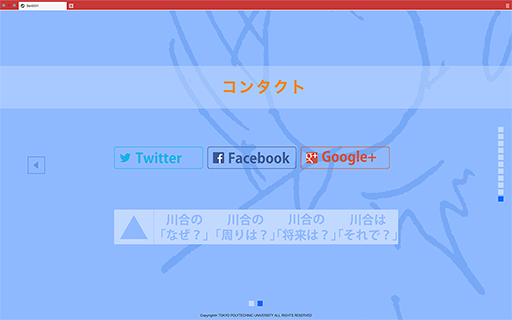
友達紹介ウェブサイト
友達の紹介サイトをお互いに作り合いました。
相手の魅力や特徴をどれだけ読み取り、デザインするかが課題になりましたが、
色合いと絵を駆使して表現することができました。
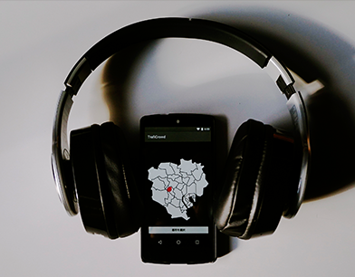
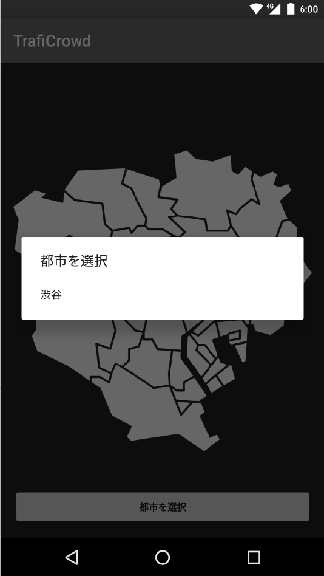
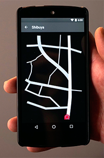
TrafiCrowd
外に出ることなく、喧騒から街を体感できるアプリです。
向きによって喧騒の方向が変わり、本当にその場所にいるかのような感覚を味わうことができます。
また、歩くことによってアプリ内のマーカーが移動していき、それに伴って音も移動しさらに没入感が生まれる作品になっています。
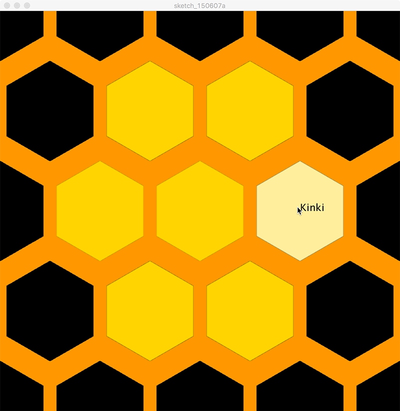
Houny Visualization
日本でのはちみつの収穫量データを色で比較したビジュアライゼーションです。
マウスオーバーで色が変わり、各地域での比較ができるようになっています。
数値などの情報はあえて入れず、直感で量がわかるように工夫しました。
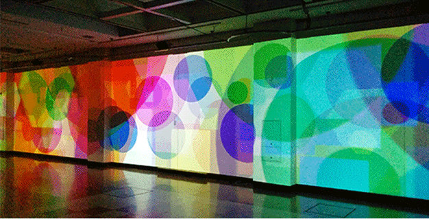
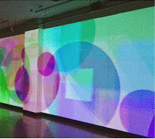
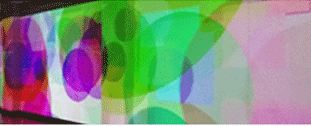
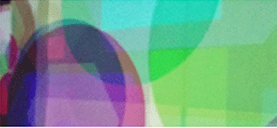
Kaleidoscope
新宿クリエイターズフェスタ2014にて27メートルの壁に投影された作品です。
会場内に流れる音楽に反応し、大小さまざまな大きさの図形がゆったりと動いていきます。
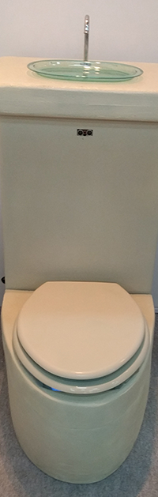
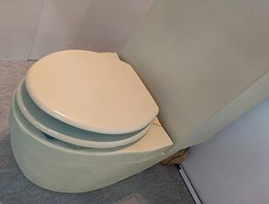
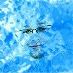
 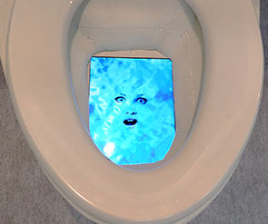
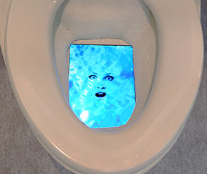
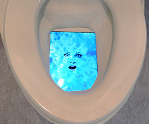
TOYLET
東京デザインウィークにて出展した、トイレをモチーフにした作品です。
普段何気なく使っているトイレがいつもと違ったら、という考えの中でうまれました。
近づく、座る、流すといったいつもの動作でいつもとは違う反応をする作品です。
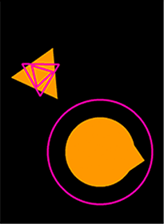
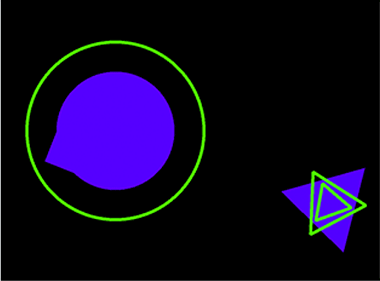
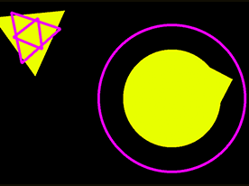
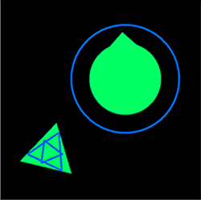
activeMark
マーカーを用いて、画面上にアニメーションを表示させるインスタレーションです。
角度や場所で色が変わり、黒い背景とのコントラストで
色あざやかな動きを表現させました。
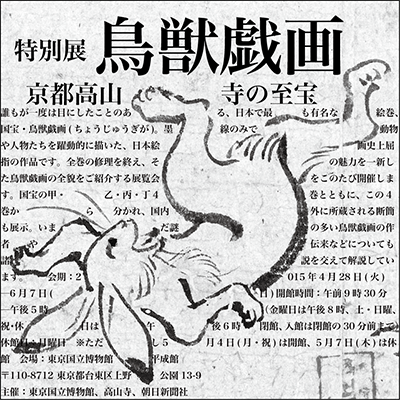
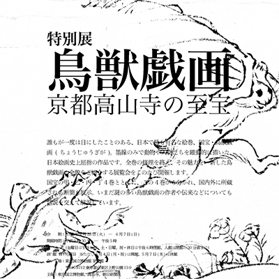
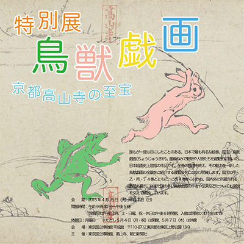
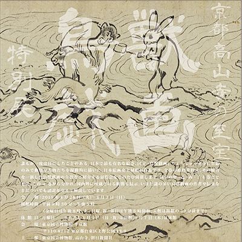